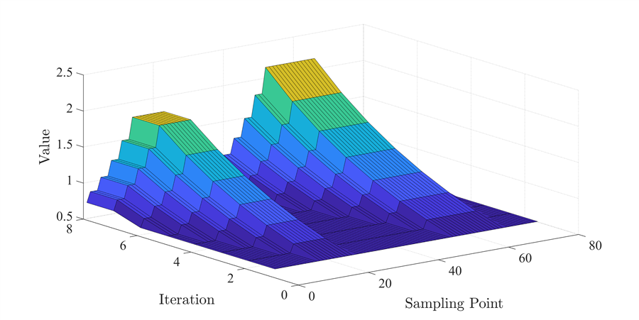

DrivingAutonomous Driving
Trajectory planning and control for automated parking, yaw stability, cooperative localization, and distributed vehicle platoons.
- Guaranteed collision-free planning
- Two-layer learning MPC for yaw stability
- Gaussian-process dynamics for platoon control